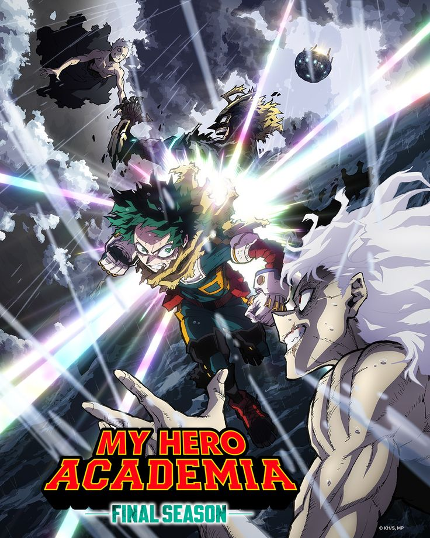
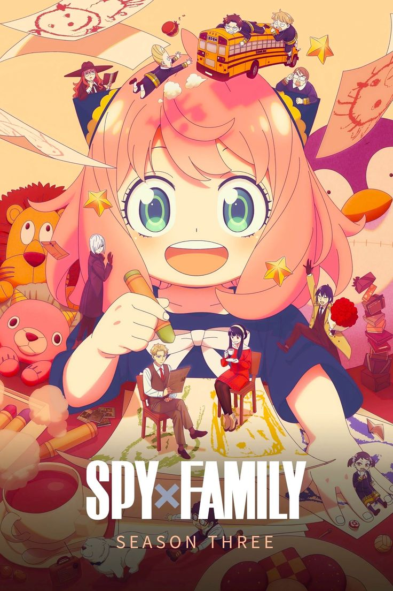
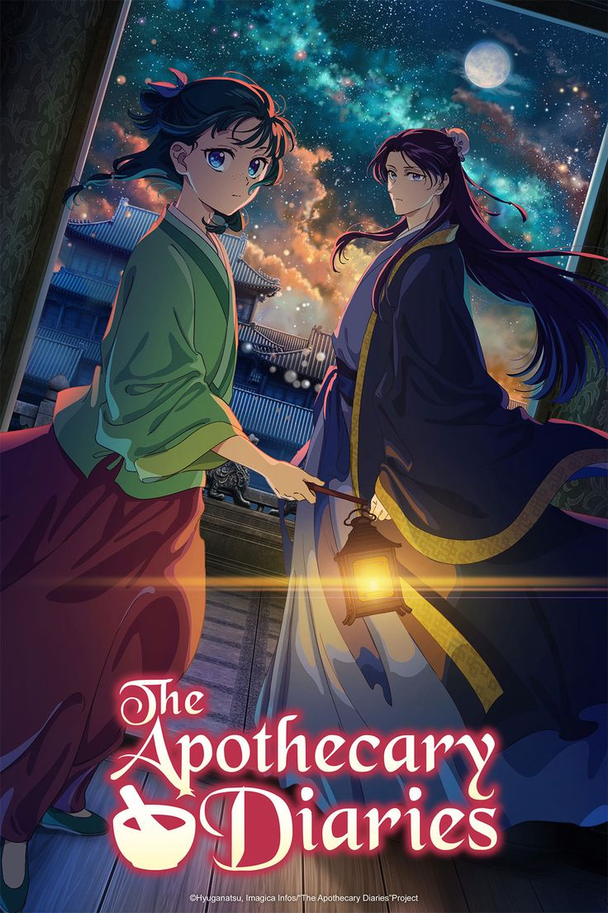
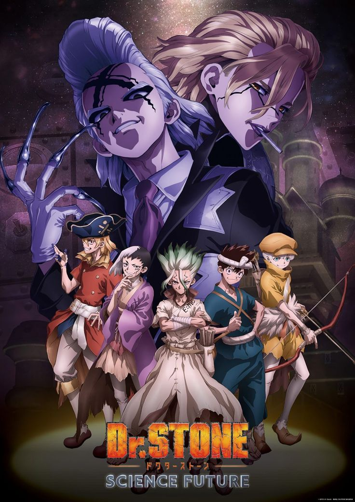

My hero academia was finnaly ended in 2025 and it was one of the top 6 best anime for 2025. the battle with Deku and Shigaraki was amazing and the animation was perfect. the stoye ended by showing the future of the characters and it was a perfect ending for the series.

Spy x family season 3 is one of the top 6 best anime for 2025. it continued the story of the family and it was amazing to see how the characters have grown. the troubles and messions the family had to go through was amazing and the animation was perfect.

Kaiju no 8 was continued with season 2 in 2025. Kafka Hibino faced new challenges and the story was amazing to see how he will overcome them. the animation was perfect and all battles and new characters were amazing.
Sakamato days was a new anime that was released in 2025. the story is about a retired assassin who is now living a peaceful life but he will be forced to return to his old life. the characters werw amazing and the battels were perfect.
The apotheary diaries continued with season 2 in 2025. maomao and jinshi faced new plots and enemies in order to survive. the animation was perfect and the story was amazing to see how the characters will overcome the new challenges.

Dr. Stone Science future is one of the top 6 best anime for 2025. it is a story about a boy who wants to be a hero and he has no powers but he will get them in the future. the final battle was amazing and the animation was perfect.
